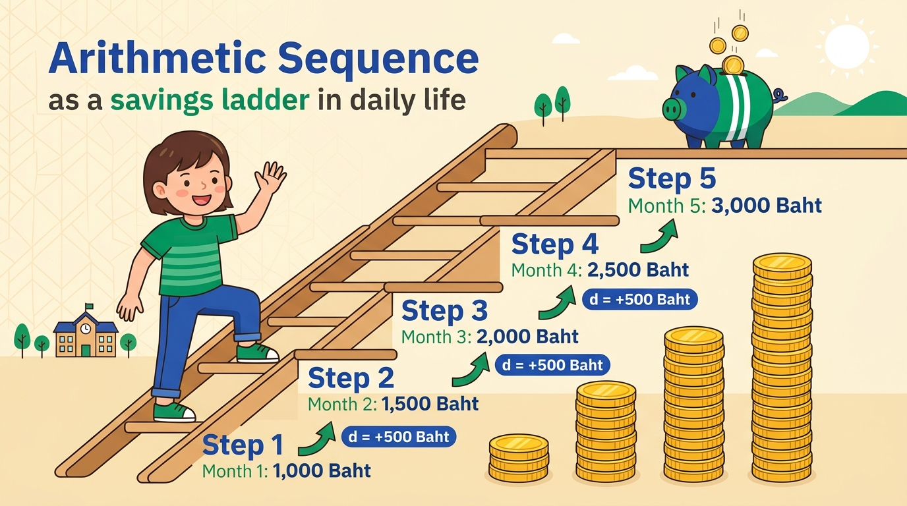
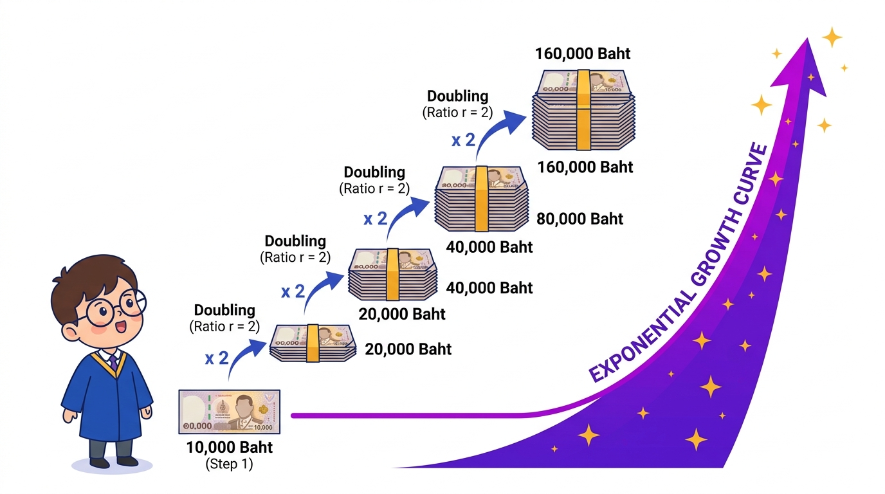
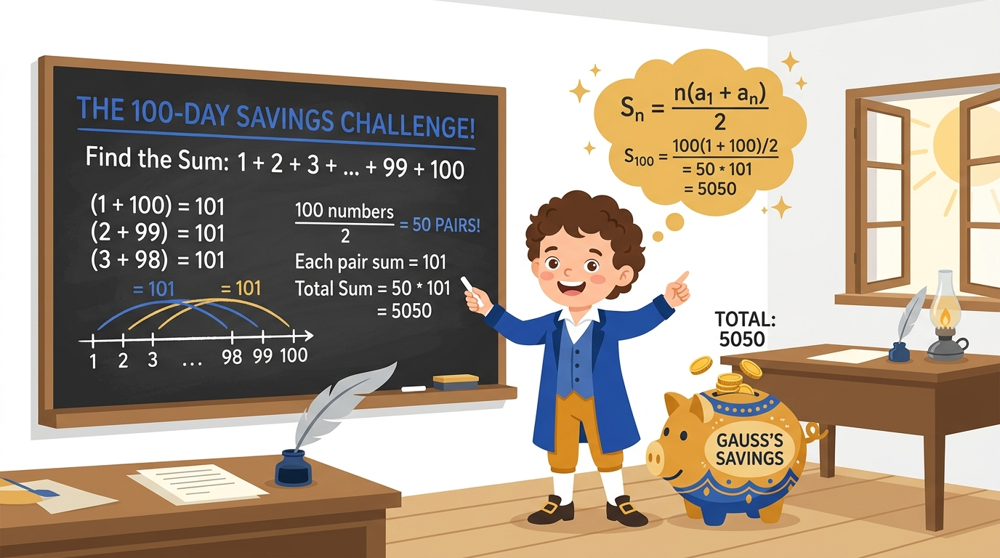

เจาะลึก 1 ประเด็นต่อ 1 สไลด์ · ลำดับเลขคณิต-เรขาคณิต · อนุกรมและผลรวมสะสม · มโนภาพการลู่เข้า vs ลู่ออก (Converge vs Diverge) · ฟังก์ชันเวียนเกิดดอกเบี้ยทบต้น · เครื่องมือจำลองกราฟ Interactive แบบเรียลไทม์



| หัวข้อ | นิยาม & ความหมาย | สูตรคำนวณสำคัญ | ตัวอย่างในชีวิตประจำวัน |
|---|---|---|---|
| ลำดับเลขคณิต | เพิ่มหรือลดด้วยค่าคงที่ $d$ | $a_n = a_1 + (n - 1)d$ | การออมเงินเพิ่มเดือนละเท่าๆ กัน |
| ลำดับเรขาคณิต | คูณทวีคูณด้วยอัตราส่วน $r$ | $a_n = a_1 \cdot r^{n-1}$ | เงินลงทุนทบต้น, การเพิ่มของประชากร |
| อนุกรมเลขคณิต | ผลรวมสะสม $n$ งวดของเลขคณิต | $S_n = \frac{n}{2}(a_1 + a_n)$ | ชาเลนจ์ออมเงิน 100 วัน (5,050 บาท) |
| อนุกรมเรขาคณิตจำกัด | ผลรวมสะสม $n$ งวดของเรขาคณิต | $S_n = \frac{a_1(1 - r^n)}{1 - r}$ | การสะสมเงินออมแบบทวีคูณรายงวด |
| อนุกรมเรขาคณิตอนันต์ | ผลรวมไม่จำกัดงวด ($n \to \infty$) | $S_\infty = \frac{a_1}{1 - r} \quad (|r| < 1)$ | การแบ่งเค้กทีละครึ่ง, เงินปันผลถาวร |
| ฟังก์ชันเวียนเกิด | ค่างวดปัจจุบันคำนวณจากงวดก่อน | $B(n) = (1+i)B(n-1), B(0)=P$ | ดอกเบี้ยทบต้นรายปี, แฟกทอเรียล, ฟีโบนัชชี |
ระบบเลขฐานสอง ฐานแปด ฐานสิบหก · การแปลงฐานข้อมูล · เลขคณิตคอมพิวเตอร์และ Two's Complement · การแทนค่าจำนวนทศนิยม Floating Point ตามมาตรฐาน IEEE 754